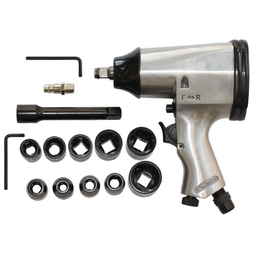

Гайковерт пневматический ударный Fubag Pw158/312
Приемущества этой модели:
- Внушительный рабочий ресурс
- Малый вес снижает энергоемкость рабочего процесса
- Высокий крутящий момент для работы с достаточно твердыми резьбовыми соединениями
Подробное описание товара
Пневмогайковерт FUBAG PW158/312 100109 предназначен для работ с высоконагруженными соединениями благодаря высокому значению крутящего момента в 312 Нм. Корпус модели изготовлен из металла, что обеспечивает отличную защиту от механических повреждений при падении. В комплекте поставляются набор оснастки, что исключает необходимость приобретать ее отдельно.
Технические характеристики товара
| Расход воздуха | от 158 до 623 л/мин |
| Рабочее давление | 6,3 атм |
| Масса | 3,7 кг |